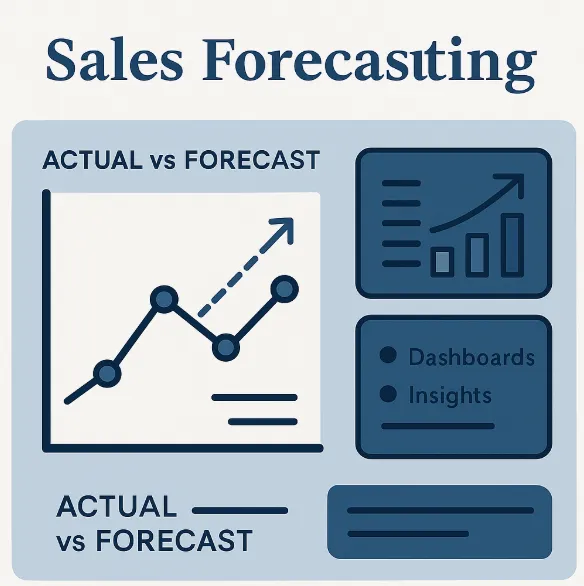
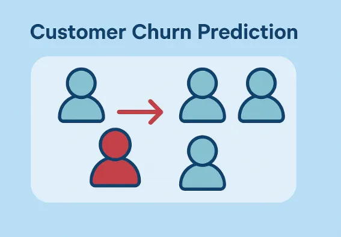
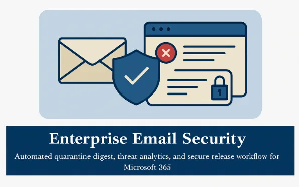

AI & Automation
We automate repetitive tasks using AI, chatbots, document processing, and workflow automation.
Explore service ↗Request a QuoteAI · DATA · AUTOMATION / ITALY
We help businesses automate workflows, build AI solutions, and turn data into clear business decisions.
AI, data & Microsoft Power Platform solutions for small and medium businesses.
Start with a free 30-minute conversation about your business.
WHAT WE DO
We automate repetitive tasks using AI, chatbots, document processing, and workflow automation.
Explore service ↗Request a QuoteWe help you understand your business data and find useful insights for better decisions.
Explore service ↗Request a QuoteWe build dashboards that help you track sales, revenue, operations, and performance with refresh schedules suited to your business.
Explore service ↗Request a QuoteWe improve database performance, structure, backup, and reliability.
Explore service ↗Request a QuoteWe help protect your business from phishing, spam, and unsafe communication.
Explore service ↗Request a QuoteWe build business apps and workflows that connect your people, data, and Microsoft 365 tools.
Explore service ↗Request a QuoteSELECTED SOLUTIONS

Reports and forecasts are difficult to compare.
Explore the solution ↗
Teams need to identify customers at risk of leaving.
Explore the solution ↗
Reviewing quarantined messages can interrupt daily work.
Explore the solution ↗ABOUT ARC INNOVATIONS
Arc Innovations helps businesses use AI, data, and automation to improve daily operations. We build dashboards, AI tools, secure workflows, and custom business applications that help teams save time and make better decisions.
We handle client information with confidentiality and use secure development practices, including access control and careful management of credentials.
WHO WE HELP
Whether you manage stock, appointments, reports, or customer requests, we start by understanding your workflow. Sensitive and regulated use cases require a specific scope and data review.
HOW WE WORK
START WITH THE RIGHT SCOPE
Your first Power BI dashboard.
Data source review, agreed KPIs, dashboard design, and handover.
Discuss this packageConnect the steps your team repeats.
Process review, workflow prototype, integrations, and testing.
Discuss this packageExplore a document assistant or predictive model.
Use-case review, data assessment, prototype, and evaluation plan.
Discuss this packagePricing depends on data readiness, integrations, access requirements, and support. We agree the scope and quote before work begins.
MEET THE TEAM
Data Scientist
Specialized in AI, machine learning, Power BI, data analysis, and business automation. Connects technical solutions with everyday business needs.
Computer Engineer
Contributes an engineering perspective to the team’s work. Project responsibilities are agreed according to the needs of each engagement.
Software Engineer
Brings a software engineering perspective to business applications. Works with the team on project planning and implementation.
Computer Engineer
Contributes a computer engineering perspective. Collaborates with the team around the technical requirements of each project.
Electronics & Telecommunication Engineer
Brings an electronics and telecommunications perspective. Supports cross-disciplinary discussions where the project requires it.
WHAT YOU CAN EXPECT
Clear deliverables, assumptions, and milestones before development begins.
Review a prototype and share feedback before the final handover.
Agree a baseline and success criteria, then evaluate the solution against them.
YOUR QUESTIONS
Cost depends on data sources, modeling, dashboard complexity, licensing, and support. Contact us for a scoped quote.
Yes. We review your spreadsheets and workflow, then propose automation using appropriate tools such as Power Automate, Python, or a business app.
Yes. We focus on practical solutions for small and medium businesses, with scope matched to the problem and budget.
Yes. We can scope assistants for company documents or business workflows, with source grounding, access control, and evaluation.
Support and maintenance can be included in the proposal. The scope, availability, and fees are agreed before delivery.
Yes, subject to the available APIs, licensing, and permissions in your Microsoft 365 environment.
Timing depends on complexity and data readiness. We propose milestones after the initial review, rather than promise a fixed duration without assessing the work.
FROM THE BLOG
LET’S TALK
Tell us about one manual process. In a free 30-minute consultation, we’ll discuss where automation could help and what a sensible next step looks like.
info@arcinnovations.it
+39 351 656 5042
Please avoid sharing passwords, confidential files, or sensitive personal information.
Free email security checklist ↗